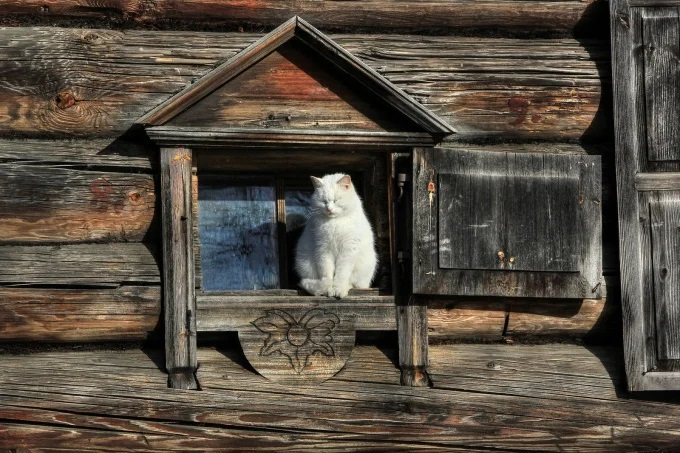

Ученые полагают, что первые предки кошек появились на земле около 60 000 лет назад и жили они на острове Мадагаскар. Это животное называли фоссу. Как бы то ни было, современная кошка появилась на земле, почему-то решила жить рядом с людьми, о чем есть подтверждения - при раскопках найдены останки кошек, обнаруженные в жилищах людей, живших примерно 10 000 лет назад.
Любопытно узнать, как именно относились к кошкам в древности. Например, в Египте. Для кошек там строили специальные храмы, после смерти делали мумии кошек и помещали в этих храмах.
В России кошка прижилась в 11 веке, без нее не строили дом и не заходили в избу, кошка на Руси считалась благим животным, которая прогоняет нечисть вокруг. За все века существования кошки рядом с человеком происходило множество революций, связанных с ними, их то возносили на пьедестал почета и обожествляли, то беспощадно гнали или сжигали.На сегодняшний день кошки есть практически в каждом доме, а пород их создано превеликое множество. По всему миру насчитывается более 50 видов семейства кошачьих для одомашнивания, кроме того, благодаря скрещиванию различных пород подвидов, в два раза больше.
